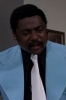

Country:United States, 83 minutes
Spoken languages:
Genres:Drama
Director(s):Oscar Williams
Writer(s):Oscar Williams, Jimmy Garrett
Video Codec:Unknown
Number: 1110


Certification:R
Storyline:
Black revolutionaries take action in the white suburbs.
Cast: 

Medium: Original DVD,
Comments: Part of: TNT Jackson + 7 Bonus Movies
Loaned: No
Aspect ratio: Unknown